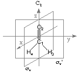

Natural Bond Orbital (NBO) Analysis
Gaussian contains version 3.1 of the NBO program by F. Weinhold and coworkers.
NBO analysis is based on a method for optimally transforming a given wave function into
localized form, corresponding to the one-center ("lone pairs") and two-center ("bonds")
elements of the chemist's Lewis structure picture. In NBO analysis, the input atomic
orbital basis set is transformed via natural atomic orbitals (NAOs) and natural hybrid
orbitals (NHOs) into natural bond orbitals (NBOs). The NBOs obtained in this fashion
correspond to the widely used Lewis picture, in which two-center bonds and lone pairs
are localized.
The Weinhold group offers updated versions of the NBO program. The corresponding
web page offers a wealth of "natural"
information and should be considered the most authoritative source of NBO-related
information. The conceptual world of natural orbitals has been laid out recently in
a very detailed manner in "Valency and Bonding - A Natural Bond Orbital Donor-Acceptor Perspective"
by F. Weinhold, C. R. Landis, Cambridge University Press, 2005.
An online-manual for the 3.0 version of the NBO program as combined with MOPAC 6.0
explaining some of the underlying concepts and some of the keywords can be found
here.
A full NBO analysis is obtained in Gaussian when using the POP=NBO
keyword, while POP=NPA requests just the Natural Population Analysis
(NPA) phase of NBO, in which atomic partial charges are obtained through summation over NAOs.
Details of the NBO analysis procedure can best be illustrated using a specific example and
formaldehyde will in the following be used for this purpose. Results of the NBO analysis are
given with respect to the standard orientation of the system as given at the beginning of the
Gaussian output file. For formaldehyde in its RHF/STO-3G structure the following input
file performs a standard NBO analysis at the RHF/STO-3G level:
#P HF/STO-3G scf=tight pop=nbo
HF/STO-3G//HF/STO-3G sp formaldehyde
0 1
C1
O2 1 r2
H3 1 r3 2 a3
H4 1 r3 2 a3 3 180.0
r2=1.21672286
r3=1.10137241
a3=122.73666566
| |
 |
The following output is obtaind for this example:
******************************Gaussian NBO Version 3.1******************************
N A T U R A L A T O M I C O R B I T A L A N D
N A T U R A L B O N D O R B I T A L A N A L Y S I S
******************************Gaussian NBO Version 3.1******************************
/RESON / : Allow strongly delocalized NBO set
Analyzing the SCF density
Job title: HF/STO-3G//HF/STO-3G sp formaldehyde
Storage needed: 510 in NPA, 633 in NBO ( 8388541 available)
Note that all NBO output is formatted to a maximum 80-character width for
convenient display on a computer terminal. The NBO heading echoes any requested
keywords (none for the present default case) and shows an estimate of the memory
requirements (in double precision words) for the separate steps of the NBO process,
compared to the total allocated memory. Increase the memory allocated to your
current job with the "%mem" directive if the estimated NBO requests exceed the
available storage.
The next four NBO output segments summarize the results of
natural population analysis (NPA). The first segment is the main NAO table, as
shown below:
NATURAL POPULATIONS: Natural atomic orbital occupancies
NAO Atom No lang Type(AO) Occupancy Energy
---------------------------------------------------------
1 C 1 s Cor( 1s) 2.00000 -11.05947
2 C 1 s Val( 2s) 1.08461 -0.26145
3 C 1 px Val( 2p) 0.90165 -0.04494
4 C 1 py Val( 2p) 0.99304 0.07032
5 C 1 pz Val( 2p) 0.85379 0.14739
6 O 2 s Cor( 1s) 1.99999 -20.15602
7 O 2 s Val( 2s) 1.79982 -1.09031
8 O 2 px Val( 2p) 1.09835 -0.11626
9 O 2 py Val( 2p) 1.91857 -0.38126
10 O 2 pz Val( 2p) 1.37055 -0.15404
11 H 3 s Val( 1s) 0.98982 0.02250
12 H 4 s Val( 1s) 0.98982 0.02250
For each of the 12 NAO functions, this table lists the atom to which the NAO is attached,
the angular momentum type 'lang' (s, px, etc.), the orbital type
(whether core, valence, or Rydberg, and a conventional hydrogen-type label),
the orbital occupancy (number of electrons, or 'natural population' of the orbital),
and the orbital energy (in Hartree). Taking NAO 5 as an example we see that this
NAO describes the energetically highest lying atomic orbital located at carbon
and has the character of a 2pz atomic orbital, occupied by 0.85379
electrons. The principal quantum numbers for the NAO labels (1s, 2s, 3s, etc.)
are assigned on the basis of the energy order if a Fock matrix is available, or
on the basis of occupancy otherwise. A message is printed warning of a 'population
inversion' if the occupancy and energy ordering do not coincide.
The next segment
is an atomic summary showing the natural atomic charges (nuclear charge minus
summed natural populations of NAOs on the atom) and total core, valence, and
Rydberg populations on each atom:
Summary of Natural Population Analysis:
Natural Population
Natural -----------------------------------------------
Atom No Charge Core Valence Rydberg Total
-----------------------------------------------------------------------
C 1 0.16692 2.00000 3.83308 0.00000 5.83308
O 2 -0.18728 1.99999 6.18729 0.00000 8.18728
H 3 0.01018 0.00000 0.98982 0.00000 0.98982
H 4 0.01018 0.00000 0.98982 0.00000 0.98982
=======================================================================
* Total * 0.00000 3.99999 12.00001 0.00000 16.00000
Natural Population
--------------------------------------------------------
Core 3.99999 ( 99.9997% of 4)
Valence 12.00001 (100.0001% of 12)
Natural Minimal Basis 16.00000 (100.0000% of 16)
Natural Rydberg Basis 0.00000 ( 0.0000% of 16)
--------------------------------------------------------
Atom No Natural Electron Configuration
----------------------------------------------------------------------------
C 1 [core]2s( 1.08)2p( 2.75)
O 2 [core]2s( 1.80)2p( 4.39)
H 3 1s( 0.99)
H 4 1s( 0.99)
This table succinctly describes the molecular charge distribution in terms of NPA
charges. The carbon atom of formaldyde, for example, is assigned a net NPA charge
of +0.16692 e at this level. Note also the slightly less positive charge on H3
and H4. Next follows a summary of the populations in the Natural Minimal Basis
(NMB) and the Natural Rydberg Basis (NRB) for the composite system, summed over
atoms.
The natural populations are summarized as an effective valence electron
configuration ("Natural Electron Configuration") for each atom. Although
the occupancies of the atomic orbitals are non-integer in the molecular
environment, the effective atomic configurations can be related to idealized atomic
states in 'promoted' configurations. For example, the carbon atom in the above table
is most nearly described by an 1s22s12p2.75
(or idealized sp2) electron configuration.
The next segments of the output summarize the results of the NBO analysis. The
first segment reports on details of the search for an NBO natural Lewis
structure:
NATURAL BOND ORBITAL ANALYSIS:
Occupancies Lewis Structure Low High
Occ. ----------------- --------------- occ occ
Cycle Thresh. Lewis Non-Lewis CR BD 3C LP (L) (NL) Dev
===================================================================
1(1) 1.90 15.90533 0.09467 2 4 0 2 0 0 0.04
Structure accepted: No low occupancy Lewis orbitals
Normally there is a single cycle in the NBO search. The table summarizes a
variety of information for each cycle: the occupancy threshold for a 'good'
pair in the NBO search; the total populations of Lewis and non-Lewis NBOs;
the number of core (CR), 2-center bond (BD), 3-center bond (3C), and lone pair
(LP) NBOs in the natural Lewis structure; the number of low-occupancy Lewis (L)
and 'high-occupancy' (> 0.1e) non-Lewis (NL) orbitals; and the maximum deviation
('Dev') of any formal bond order from a nominal estimate (NAO Wiberg bond index)
for the structure. If the latter exceeds 0.1, additional NBO searches are
initiated (indicated by the parenthesized number under 'Cycle') for alternative
Lewis structures. The Lewis structure is accepted if all orbitals of the formal
Lewis structure exceed the occupancy threshold (default: 1.90 electrons).
Next follows a more detailed breakdown of the Lewis and non-Lewis occupancies
into core, valence, and Rydberg shell contributions:
Core 3.99999 (100.000% of 4)
Valence Lewis 11.90534 ( 99.211% of 12)
================== ============================
Total Lewis 15.90533 ( 99.408% of 16)
Valence non-Lewis 0.09467 ( 0.592% of 16)
Rydberg non-Lewis 0.00000 ( 0.000% of 16)
================== ============================
Total non-Lewis 0.09467 ( 0.592% of 16)
This shows the general quality of the natural Lewis structure description in
terms of the percentage of the total electron density (in the above case
about 99.4 %). The table also exhibits the relatively important role of the
valence non-Lewis orbitals relative to the extra-valence orbitals (e.g. Rydberg
NBOs which occur when using a non-minimal basis set) in the slight departures
from a localized Lewis structure model.
Next follows the main listing of NBOs, displaying the form and occupancy of the
complete set of NBOs that span the input AO space:
(Occupancy) Bond orbital/ Coefficients/ Hybrids
---------------------------------------------------------------------------------
1. (1.99777) BD ( 1) C 1 - O 2
( 41.41%) 0.6435* C 1 s( 34.36%)p 1.91( 65.64%)
0.0000 0.5862 0.0000 0.0000 0.8102
1s 2s 2px 2py 2pz
( 58.59%) 0.7654* O 2 s( 24.04%)p 3.16( 75.96%)
0.0000 0.4903 0.0000 0.0000 -0.8716
This first NBO corresponds to a sigma(C-O) bond with approximate composition
of 0.6435 C(sp1.91) + 0.7654 O(sp3.16). The weights are
obtained from the squares of the coefficients as (0.6435)2 = 0.4141,
corresponding to 41.41 % localization on carbon C1. In a similar way the 58.59 %
localization on oxygen O2 is obtained. Overall, this describes a polar sigma(C-O)
bond.
2. (2.00000) BD ( 2) C 1 - O 2
( 45.08%) 0.6714* C 1 s( 0.00%)p 1.00(100.00%)
0.0000 0.0000 1.0000 0.0000 0.0000
( 54.92%) 0.7411* O 2 s( 0.00%)p 1.00(100.00%)
0.0000 0.0000 1.0000 0.0000 0.0000
3. (1.99522) BD ( 1) C 1 - H 3
( 51.57%) 0.7181* C 1 s( 32.82%)p 2.05( 67.18%)
0.0000 0.5729 0.0000 0.7071 -0.4145
( 48.43%) 0.6959* H 3 s(100.00%)
1.0000
4. (1.99522) BD ( 1) C 1 - H 4
( 51.57%) 0.7181* C 1 s( 32.82%)p 2.05( 67.18%)
0.0000 0.5729 0.0000 -0.7071 -0.4145
( 48.43%) 0.6959* H 4 s(100.00%)
1.0000
5. (2.00000) CR ( 1) C 1 s(100.00%)
1.0000 0.0000 0.0000 0.0000 0.0000
6. (1.99999) CR ( 1) O 2 s(100.00%)
1.0000 0.0000 0.0000 0.0000 0.0000
7. (1.99857) LP ( 1) O 2 s( 75.96%)p 0.32( 24.04%)
0.0000 0.8716 0.0000 0.0000 0.4903
8. (1.91857) LP ( 2) O 2 s( 0.00%)p 1.00(100.00%)
0.0000 0.0000 0.0000 1.0000 0.0000
NBO 7 and NBO 8 correspond to lone pairs on oxygen O2 with spz0.32
and with pure py character, respectively.
9. (0.00338) BD*( 1) C 1 - O 2
( 58.59%) 0.7654* C 1 s( 34.36%)p 1.91( 65.64%)
0.0000 0.5862 0.0000 0.0000 0.8102
( 41.41%) -0.6435* O 2 s( 24.04%)p 3.16( 75.96%)
0.0000 0.4903 0.0000 0.0000 -0.8716
10. (0.00000) BD*( 2) C 1 - O 2
( 54.92%) 0.7411* C 1 s( 0.00%)p 1.00(100.00%)
( 45.08%) -0.6714* O 2 s( 0.00%)p 1.00(100.00%)
11. (0.04564) BD*( 1) C 1 - H 3
( 48.43%) 0.6959* C 1 s( 32.82%)p 2.05( 67.18%)
0.0000 -0.5729 0.0000 -0.7071 0.4145
( 51.57%) -0.7181* H 3 s(100.00%)
-1.0000
12. (0.04564) BD*( 1) C 1 - H 4
( 48.43%) 0.6959* C 1 s( 32.82%)p 2.05( 67.18%)
0.0000 -0.5729 0.0000 0.7071 0.4145
( 51.57%) -0.7181* H 4 s(100.00%)
-1.0000
For each NBO (1-12), the first line of the printout shows the occupancy (between
0 and 2.0000 electrons) and unique label of the NBO. This label gives the type
("BD" for 2-center bond, "CR" for 1-center core pair, "LP" for 1-center valence
lone pair, "RY*" for 1-center Rydberg, and "BD*" for 2-center antibond, the
unstarred and starred labels corresponding to Lewis and non-Lewis NBOs, respectively),
a serial number (1, 2,... if there is a single, double,... bond between the pair
of atoms), and the atom(s) to which the NBO is affixed. The next lines summarize
the natural atomic hybrids hA of which the NBO is composed, giving the percentage
(100xcA2) of the NBO on each hybrid (in parentheses), the
polarization coefficient cA, the atom label, and a hybrid label
showing the sp composition (percentage s-character, p-character, etc.) of each
hA.
The next segment summarizes the second-order perturbative estimates of 'donor-
acceptor' (bond-antibond) interactions in the NBO basis:
Second Order Perturbation Theory Analysis of Fock Matrix in NBO Basis
Threshold for printing: 0.50 kcal/mol
E(2) E(j) -E(i) F(i,j)
Donor NBO (i) Acceptor NBO (j) kcal/mol a.u. a.u.
=======================================================================
within unit 1
1. BD ( 1) C 1 - O 2 / 11. BD*( 1) C 1 - H 3 0.92 1.76 0.036
1. BD ( 1) C 1 - O 2 / 12. BD*( 1) C 1 - H 4 0.92 1.76 0.036
3. BD ( 1) C 1 - H 3 / 9. BD*( 1) C 1 - O 2 1.85 1.59 0.048
3. BD ( 1) C 1 - H 3 / 12. BD*( 1) C 1 - H 4 1.71 1.36 0.043
4. BD ( 1) C 1 - H 4 / 9. BD*( 1) C 1 - O 2 1.85 1.59 0.048
4. BD ( 1) C 1 - H 4 / 11. BD*( 1) C 1 - H 3 1.71 1.36 0.043
8. LP ( 2) O 2 / 11. BD*( 1) C 1 - H 3 29.85 1.04 0.159
8. LP ( 2) O 2 / 12. BD*( 1) C 1 - H 4 29.85 1.04 0.159
This analysis is carried out by examining all possible interactions between
'filled' (donor) Lewis-type NBOs and 'empty' (acceptor) non-Lewis NBOs, and
estimating their energetic importance by 2nd-order perturbation theory. Since
these interactions lead to loss of occupancy from the localized NBOs of the
idealized Lewis structure into the empty non-Lewis orbitals (and thus, to
departures from the idealized Lewis structure description), they are referred
to as 'delocalization' corrections to the zeroth-order natural Lewis structure.
For each donor NBO (i) and acceptor NBO (j), the stabilization energy E(2)
associated with delocalization ("2e-stabilization") is estimated. As the
heading indicates, entries are included in this table only when the
interaction energy exceeds a default threshold of 0.5 kcal/mol. The strongest
interaction is in this example identified for the interaction of lone pair
orbital NBO 8 localized on O2 with the adjacent sigma*(C-H) bonds.
Next appears a condensed summary of the principal NBOs, showing the occupancy,
orbital energy, and the qualitative pattern of delocalization interactions
associated with each:
Natural Bond Orbitals (Summary):
Principal Delocalizations
NBO Occupancy Energy (geminal,vicinal,remote)
==========================================================================
Molecular unit 1 (CH2O)
1. BD ( 1) C 1 - O 2 1.99777 -1.09402 11(g),12(g)
2. BD ( 2) C 1 - O 2 2.00000 -0.44319
3. BD ( 1) C 1 - H 3 1.99522 -0.69465 9(g),12(g)
4. BD ( 1) C 1 - H 4 1.99522 -0.69465 9(g),11(g)
5. CR ( 1) C 1 2.00000 -11.05946
6. CR ( 1) O 2 1.99999 -20.15611
7. LP ( 1) O 2 1.99857 -0.98034
8. LP ( 2) O 2 1.91857 -0.38126 11(v),12(v)
9. BD*( 1) C 1 - O 2 0.00338 0.89756
10. BD*( 2) C 1 - O 2 0.00000 0.28199
11. BD*( 1) C 1 - H 3 0.04564 0.66156
12. BD*( 1) C 1 - H 4 0.04564 0.66156
----------------------------------------
Total Lewis 15.90533 ( 99.4083%)
Valence non-Lewis 0.09467 ( 0.5917%)
Rydberg non-Lewis 0.00000 ( 0.0000%)
----------------------------------------
Total unit 1 16.00000 (100.0000%)
Charge unit 1 0.00000
Details of the NBO analysis can be specified with a number of additional keywords.
These latter keywords are read from the input stream after the end of the Z-Matrix
specification, provided that the POP=NBORead keyword
is used. Some of the more helpful keywords are:
NBOSUM requests printing of the NBO summary table.
This combines elements of the NBO table and 2nd-order perturbation theory analysis
table in a convenient form for recognizing the principal delocalization
patterns.
RESONANCE requests search for highly delocalized
structures. The NBO search normally aborts when one or more Lewis NBOs has less
than the default occupancy threshold of 1.90 electrons for a 'good' electron pair.
When the RESONANCE keyword is activated, this threshold is successively lowered
in 0.10 decrements to 1.50, and the NBO search repeated to find the best Lewis
structure within each occupancy threshold. The program returns with the best
overall Lewis structure (lowest total non-Lewis occupancy) found in these searches.
This is useful for benzene and other highly delocalized molecules.
NOBOND requests that no bonds (2-center NBOs) are
to be formed in the NBO procedure. The resulting NBOs will then simply be
1-center atomic hybrids. This is useful for highly ionic species.
3CBOND requests search for 3-center bonds. The normal
default is to search for only 1- and 2-center NBOs. This is useful for diborane
and other electron-deficient 'bridged' species.
NLMO computes and prints out the summary table of
Natural Localized Molecular Orbitals (NLMOs). The latter are similar to Boys or
Edmiston-Ruedenberg LMOs, but more efficiently calculated. This is useful for a
'semi-localized' description of an SCF or correlated wavefunction and is activated
automatically by all keywords that pertain to NLMOs (e.g., AONLMO, SPNLMO,
DIPOLE).
BNDIDX calculates and prints Wiberg bond indices.
A detailed overview of the performance of the NPA method in describing the charge distribution
in water can be found in:
F. Martin, H. Zipse, J. Comp. Chem. 2005, 26, 97 - 105.
A copy of the pdf file is available here.
last changes: 22.01.2007, HZ + AS
questions & comments to: zipse@cup.uni-muenchen.de